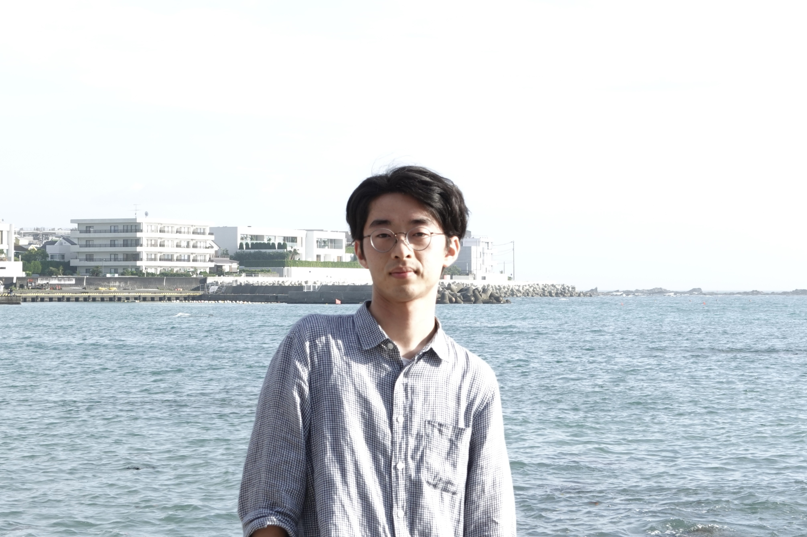

Mao HOSHINO/星野 真生

Department of Mathematical Sciences
The University of Tokyo
3-8-1 Komaba, Tokyo, 153-8914
Japan
Email: mhoshino (a) ms.u-tokyo.ac.jp
About me
I am a Ph.D. student in mathematics, supervised by Prof. Yasuyuki Kawahigashi.
My interest is in quantum groups, representation theory and
operator algebras.
Papers
Preprints
- (with K. Kitamura) A note on quantum subgroups of free quantum groups, arXiv:2403.11151.
Accepted
- The automatic imprimitivity for G_q,
J. Funct. Anal. (2024), 110413.
DOI:https://doi.org/10.1016/j.jfa.2024.110413.
Talks
- Equivariant quantum covering spaces over quantum homogeneous spaces, Operator Algebra Seminar, The University of Tokyo, Japan, December 2022.
- Equivariant quantum covering spaces over quantum homogeneous spaces, Annual Meeting on Operator Theory/Operator Algebras, Osaka Kyoiku University, Japan, December 2022.
- Equivariant quantum covering spaces over quantum homogeneous spaces, Quantum Groups Seminar, online, March 2023.
- Equivariant quantum covering spaces over quantum homogeneous spaces, Japan-Netherlands Joint Seminar: Index Theory and Operator Algebras in Topological Physics, Online, March 2023.
- Equivariant quantum covering spaces over quantum homogeneous spaces, Quantum Analysis Seminar, Nagoya University, Japan, March 2023.
- Equivariant quantum covering spaces over quantum homogeneous spaces, Kyoto Operator Algebra Seminar, Kyoto University, Japan, April 2023.
- Finite index quantum subgroups of DQGs, Junior Meetings on Functional Analysis, Kyoto Institute of Technology, Kyoto, Japan, September 2023.
- Finite index quantum subgroups of DQGs, Operator Algebra Seminar, The University of Tokyo, Japan, December 2023.
- A construction of quantum flag manifolds via deformed quantized enveloping algebras, The 20th Mathematics Conference for Young Researchers, Hokkaido University, Japan, March 2024.
Poster
- The automatic imprimitivity for G_q, OAS Follow on: Operator Algebras: Subfactors and Applications, Isaac Newton Institute, UK, June 2023.